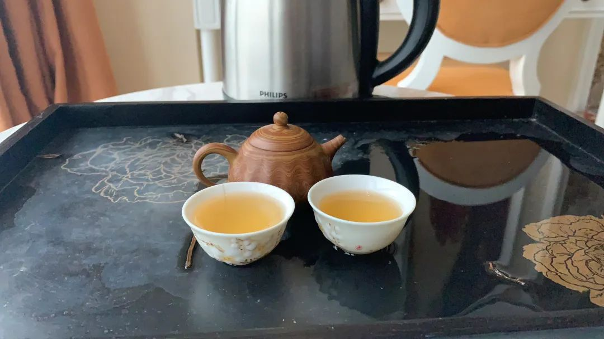

Terminus2049/Terminus2049.github.io
原文链接 备份链接 原文来自财新网：来自前线医生的声音：请国际同行支援我们 记者 宿慧娴 第一批援鄂广东医疗队队员在《柳叶刀》发表通讯，称武汉当地物资和人员依然短缺，希望国际医务工作者前来援助。 【财新网】（记者 宿慧娴）广东首批援 …
七、舱，生
2、大江大河2020
匆匆加入医疗队出发后，省市里头卫建、教育、共青团、妇联便组织起来，慰问家访，定期往家中送肉送菜；诸多热心的企业、个人亦频频发出捐献的意向。后方诸多的姿瓷（膜一下），令我们非常感动，也确实起到了让我们心无旁骛投入工作的作用。
我们这批人从业经历最长的不超过20年，私底下交流，都觉得这是医疗行业声誉的顶峰，回到两三月前媒体不时爆出对我们打打杀杀的事件，确有天翻地覆如隔三秋的感觉。
我们这批人以自主报名和抽签组成，无论怎么来的，都担不起高尚、英雄这些称谓——大年初十的时候和一个朋友抽烟喝茶，他叹着气说不知何时复工；我笑着说你就好咯啦，现在这种形势，没准过几天我们这种小地方也要去支援。不想一语成谶，至于我们出发后，后方的各种慰问、支援，职称评审薪资优待等政策的出台，宛如名利场的漩涡，总会对人有所吸引，但是在出发前我们是没有料到的。
疫区之外，许多的医护人员、警察、环卫工、志愿者奋斗在卡口、隔离病区、隔离观察点，昨日单位宣传科找我要了张照片，问我写两句，我说致敬平凡吧。也因为疫情的影响，很多医院的财政状况都陷入艰难。
正能量一词成名于2019，但最早出自春晚铁杆粉丝宋山木先生，先生在鹏城开了一家培训机构，2010年因弓虽女干下属员工事发，据说他在犯罪前，总要对人进行心理控制，最常说的便是“你现在身体里充满了负能量，我给你注入一点正能量”。所以，我现在看到这个词，心里就腻歪；美丽的逆行，也差不多如此。社会是大家的社会，大家各司其职罢了，若每个人都甘于平凡，也就没那些闹剧惨剧了。
再回到医疗行业声誉的巨变，我摘抄了《麻，风医生与巨变中，国》几段。
a.1950至1980年代实行的麻风隔离防治，是一场医疗化与集体化并行的大型社会控制……以此人道之名的强制隔离防疫政策，遇上污名歧视与医疗人力有限的困境，结果却是利用医师的低阶政治成分，来增加麻风防疫的人力。更关键的是，在***的号召下，众多忍辱负重的医疗人员，勉励发挥其爱国主义与人道精神，执行国家指派的情绪劳动。换言之，国家、大众、乃至医病双方都在高远的目标下，认可牺牲个体，以成就集体。
b.不论是医疗对个人病痛的照护，或是公卫对大众健康福祉的关注，“人”应该都是卫生治理的根本。然而，社会成见、人群区隔、政治目标、国际连结、功绩评判、经济效率等因素，却常让根本目标退居其他考量之后。实然与应然的矛盾，显示卫生治理中常见的道德、政治与规模的尺度盲点，时时在影响我们对于集体利益与个人自由的衡量。
c.人类社会永远存在以集体之名牺牲个人自由与权益的动机。那么，如何维持两者之间那条红线的位移平衡，是社会必须保持警戒与关注的焦点。而维持警戒的前提应该是：必须认知公共利益与个人自由之间是一场拉锯，辨识当中无可回避的政治理念与社会道德，才可能尽量免除以集体之名为理所当然的公共正当性，伤害个人。即使疫病再起或其他紧急状态出现，若欲对个人自由进行暂时性的约束以保护集体利益，也仍然不该忘却对个人权益的维护，如此才能将牺牲个人所导致的伤害降到最低，也才能避免国家或专业以集体之名滥用权力。
历史啊，它就是一个轮回，这是我说的话。
我和同行们聊过，疫情过去了，人们还会对医护人员好吗？现代医疗的成本是高昂的，现行的机制下，尖端设备、药物的研究生产，再到医护人员的培养，最终的成本都会转嫁到个人；所有的人终其一生，都无法战胜疾病和死亡，除了少数无疾而终者。两者结合到一块，就形成这么一个消费体验：我钱花了，人却死了。同样的病，治疗方案可能是不同的，有的人好了有的人没有，和医生水平高低，个人体质甚至纯粹的运气有关，这些里头的东西即使受过高等教育的人也不一定能理解。一个合格医生的培养至少要花十年的时间，所以让媒体来科普，受众相当有限，近年来很多网红医生就是朝着这个方向在努力；营造互相包容体谅的氛围，加大医疗投入，假以光阴，人们终究会对医护人员好的。
致敬平凡，致敬明天。
题外话：几篇日记吸引挺多人关注，感谢抬爱。也因为文笔太过奇葩，评论里有人质问我是不是轮子，上班挺累，下班要抓紧休息，没力气争论直接拉黑了。今天没图，就拍了自带的茶具，下班的时光，自有一壶清茶相伴。方舱医院逐渐出现空床，一切向好！

原文链接 备份链接 原文来自财新网：来自前线医生的声音：请国际同行支援我们 记者 宿慧娴 第一批援鄂广东医疗队队员在《柳叶刀》发表通讯，称武汉当地物资和人员依然短缺，希望国际医务工作者前来援助。 【财新网】（记者 宿慧娴）广东首批援 …
原文链接 备份链接 武汉济和医院的命运在1月23日那天分叉了。 小年夜，也是武汉发出“封城”公告的同一天，这家位于武汉蔡甸区的非公医疗二级综合医院被征用为新冠肺炎患者定点救治医院，成为武汉不到10家的首批定点医院中的一员，继而被推到了一场 …
原文链接 备份链接 “ - 疫 情 之 下 - 武汉的疫情就像一簇紧簇的乌云，笼罩在每一个人的心头。但所幸，在这个受伤的城市中，在每台志愿者车里，在疲于奔波的路上，总有那么一群可爱的人，温暖着我们前线医护工作者的心。 ” 1 2020年 …
原文链接 备份链接 要允许公卫流行病学专家发表意见 允许医生们讨论； 要信息透明，不要怕社会小混乱 小混乱可以避免大乱 2月7日晚，医护人员做好准备即将进入武汉客厅“方舱医院”进行工作。 据国家卫健委通报的数据，截至2月14日24时，全 …
原文链接 备份链接 伴随着火神山、雷神山医院开始收治病人，15家方舱医院陆续启动， 各省医疗队开赴武汉，武汉所有确诊患者与疑似病例都将“应收尽收”。 在人类抗击疫病的历史上，“武汉会战”已成为一场史无前例的超级行动 图/新华、中新 武汉 …